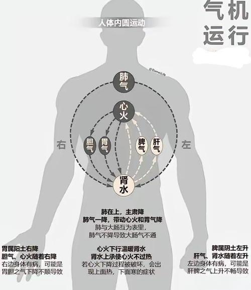
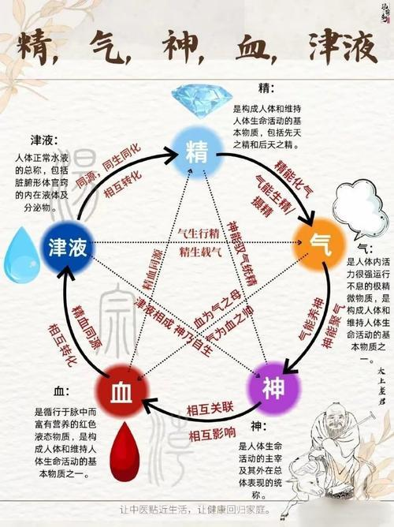
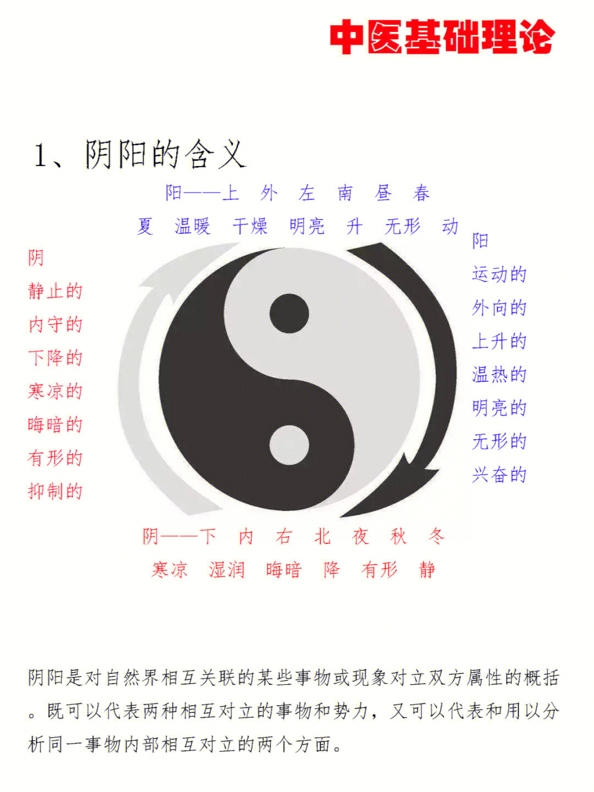
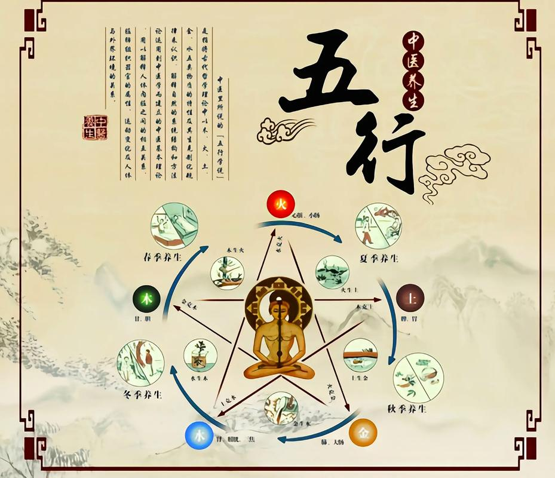
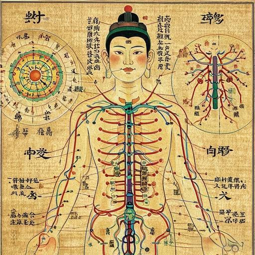
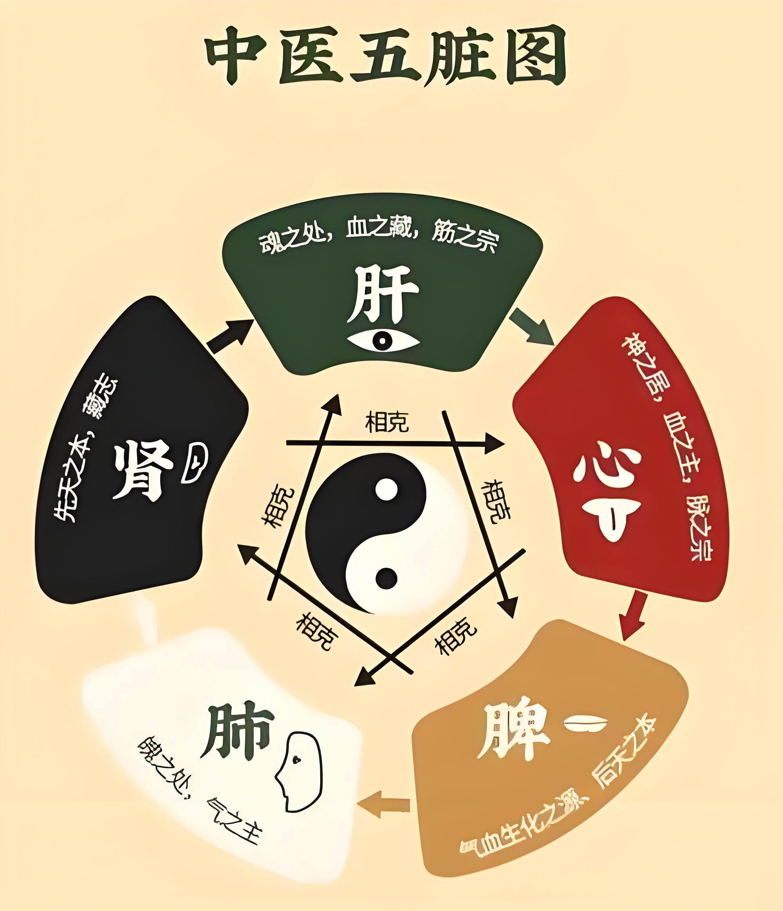

《
》
中医理念
综述
中医理论来源于对医疗经验的总结及中国古代的阴阳五行思想。其内容包括精气学说、阴阳五行学说、气血津液、藏象、经络、体质、病因、发病、病机、治则、养生等。早在两千多年前，中医专著《黄帝内经》问世，奠定了中医学的基础。时至今日，中国传统医学相关的理论、诊断法、治疗方法等，均可在此书中找到根源。 中医学理论体系是经过长期的临床实践，在唯物论和辩证法思想指导下逐步形成的，它来源于实践，反过来又指导实践。通过对现象的分析，以探求其内在机理。因此，中医学这一独特的理论体系有两个基本特点，一是整体观念，二是辨证论治。中医的基础理论是对人体生命活动和疾病变化规律的理论概括，它主要包括阴阳、五行、气血津液、脏象、经络、运气等学说，以及病因、病机、诊法、辨证、治则治法、预防、养生等内容。
注意：本界面最底下略有BUG！如果遇上鬼畜，请将光标抬高。
运气学说

鼠标置于图片上观看图片，鼠标下移观看内容
运气学说又称五运六气，是研究、探索自然界天文、气象、气候变化对人体健康和疾病的影响的学说。五运包括木运、火运、土运、金运和水运，指自然界一年中春、夏、长夏、秋、冬的季候循环。六气则是一年四季中风、寒、暑、湿、燥、火六种气候因子。运气学说是根据天文历法参数用来推算、预测来年的天象、气候、疾病发生流行的规律，并提供预防、养生的方法。
精气学说

鼠标置于图片上观看图片，鼠标下移观看内容
气是构成天地万物的原始物质。气的运动称为“气机”，有“升降出入”四种形式。由运动而产生的各种变化，称为“气化”，如动物的“生长壮老已”，植物的“生长化收藏”。气是天地万物之间的中介，使之得以交感相应。如：“人与天地相参，与日月相应”。天地之精气化生为人。
阴阳学说

鼠标置于图片上观看图片，鼠标下移观看内容
阴阳是宇宙中相互关联的事物或现象对立双方属性的概括。最初是指日光的向背，向日光为阳，背日光为阴。阴阳的交互作用包括：阴阳交感、对立制约、互根互用、消长平衡、相互转化。
阴阳学说是中国古代哲学范畴。邓氏的现代阴阳是“对立统一”或“矛盾关系”的一种划分或细分，两者是种属关系。对立统一规律是“阴阳”的上位属概念，阴阳则是对立统一的两个下位种概念。
阴阳是互不相容又紧密联系的两个对立面的一对性态或属性。阴阳的内涵互相否定，一个概念“阴”肯定对象的阴的属性，另一个概念“阳”则以否定阴概念所肯定的属性，作为阳对象的属性。
阴阳的外延互相排斥，又相互互补，其总和等于它们最邻近的属概念的外延，即两个种概念外延的和或并。
阴阳是对立统一或矛盾关系中两个不同性态，属性的一对哲学或逻辑范畴的概括，就是两事物或一事物即相互依赖，相互联系，又相互对立，相互排斥，相互否定，相反相承的一对并列的种概念。（邓宇等的现代阴阳概念与定义）。
人们通过对矛盾现象的观察，逐步把矛盾概念上升为阴阳范畴，并用阴阳二气的消长来解释事物的运动变化。阴阳学说认为世界是物质的，物质由阴阳二部分组成，凡是剧烈运动的、外向的、上升的、温热的、明亮的，都属于阳。相对静止的、内守的、下降的、寒冷的、晦暗的，都属阴。因而阴阳存在两个对立面，在阴阳消长和对立统一作用下，相互资生、相互制约、相互变化中构成世界万物。中医运用阴阳对立统一的观念来阐述人体上下、内外各部分之间，以及人体生命同自然、社会这些外界环节之间的复杂联系。阴阳对立统一的相对平衡，是维持和保证人体正常活动的基础；阴阳对立统一关系的失调和破坏，则会导致人体疾病的发生，影响生命的正常活动。
五行学说

鼠标置于图片上观看图片，鼠标下移观看内容
五行学说是中国古代哲学的重要成就。五行学说即是用木、火、土、金、水五个哲学范畴来概括客观世界中的不同事物属性，并用五行相生相克的动态模式来说明事物间的相互联系和转化规律。五行学说中以五脏配五行，即：肝与木、心与火、脾与土、金与肺、水与肾。五脏与五行相生相克应保持相对平衡和稳定，和谐相处。如果五脏与五行发生失调，出现太过、不及或反侮，也会致疾病的发生，这对于推断疾病的好转和恶变，治疗方法，提供了充足依据。中医主要运用五行学说阐述五脏六腑间的功能联系以及脏腑失衡时疾病发生的机理，也用以指导脏腑疾病的治疗。
五行于中医则体现了具备这五种属性的人体五大系统的相互关系。木火土金水这五个符号分别代表肝心脾肺肾所统领的五大系统。中医不是研究微观的病毒细菌如何作用于人体的理论而是研究人体整体的各个系统之间的关系，并且通过中药、按摩、针灸，甚至心理作用去调节各个系统之间的平衡，以此保持身体健康。
五行的交互作用包括：相生、相克、制化、胜复、相侮、相乘、母子相及。
气血津液

鼠标置于图片上观看图片，鼠标下移观看内容
气血津液是构成人体的基本物质，是腑脏、经络等组织器官进行生理活动的物质基础。
气是构成人体和维护人体生命活动的最基本物质，在生理上具有推动、温煦、防御、固摄、气化等功能。气聚合在一起便形成了有机体，气散则形体灭亡。庄子说：“通天下一气耳”，全天下就是一个气。有了这个气就运动，就生生不息，就变化不止，没有这口气就完了。
血是构成人体和维持人体生命活动的基本物质，具有很高的营养和滋润作用。血必须在脉中运行，才能发挥它的生理作用。血在脉中循环运行，内至腑脏，外达皮肉筋骨，不断对全身各腑脏组织器官起着充分的营养和滋润作用，维持人体正常的生理活动。
津液是指各腑脏组织器官的内在体液及正常分泌物，是机体一切正常水液的总称。津和液的性状功能及分布部位各有不同，津是指性质较清稀，流动性较大，分布于体表皮肤肌肉，并能渗注于血脉，起着滋润的作用。液是指性质较稠厚，流动性较小，流注于骨节、腑脏、脑髓等组织，起着濡养作用。
气血津液都是机体腑脏、经络等组织器官进行生理活动所需要的能量，而气血津液又依赖于腑脏、经络等组织器官正常的生理活动。如果气血津液代谢不正常或腑脏、经络等组织器官不能进行正常的生理活动，就会引起疾病的发生。
脏腑学说

鼠标置于图片上观看图片，鼠标下移观看内容
脏腑学说主要是研究五脏（心、肝、脾、肺、肾）、六腑（小肠、大肠、胃、膀胱、胆、三焦）和奇恒之腑（脑、髓、骨、脉、胆、女子胞）的生理功能和病理变化。
藏：指人体内的五脏六腑、奇恒之府，通称为脏腑。象：一指“形象”，即脏腑的解剖型态；二指“征象”，即脏腑表现于外的生理病理；三指“应象”，即脏腑相应于四时阴阳之象。
透过外在“象”的变化，以测知内在“藏”的生理病理状态，称为“从象测藏”。即“视其外应，以知其内脏”。
“脏腑”不单是解剖型态的概念，而是包括解剖、生理、病理在内的综合概念。
五脏：指肝、心、脾、肺、肾，一般笼统功能为“化生和储藏精气”。
六腑：指胆、胃、大肠、小肠、膀胱、三焦，一般笼统功能为“腐熟水榖、分清泌浊、传化糟粕”。
奇恒之府：指“脑、髓、骨、脉、胆、女子胞”。